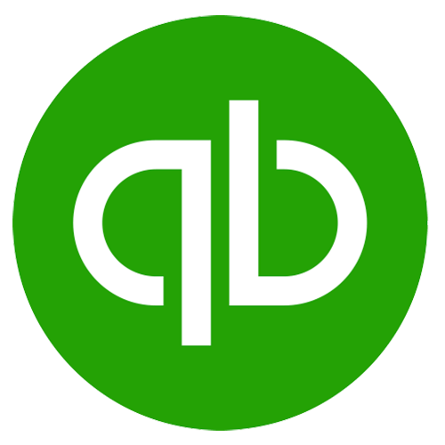

Talk to us about expanding your program with custom enhancements such as, auto-part-number generation, forecasting, scheduling, or special report packages. The possibilities are endless. We provide unmatched response time with the typical turnaround of 1-2 weeks. Customization is not even an option with most software suppliers. Our ability and willingness to support you with custom features, sets our product apart from all others.
| Name of Add On: | Description: |
|---|---|
| BOM History | With the BOM Histroy you can maintain complete BOM revision history of all designs. This feature allows you to easily view and compare old BOMs as they were. It also provides a high level of control on current BOMs and maintains a complete audit trail of any and all changes. |
| BOM Export | With the BOM Export you can Export Single and Multi-level bill-of-materials to Microsoft Excel with a single click. Although you can export any program data at any time, this feature will reconstruct complex multi-lever Bills of Materials into an easy to read Excel format. |
| BOM Import | Import master BOM files from SolidWorks, Autodesk and other CAD programs. This feature allows ongoing development work in your CAD program, and provides a means to easily import your master BOMs and new part numbers into the PEDYN program. |
| Serial Number Module | The Serial Number Module tracks top and sub-level serial numbers through the life of a product. This feature allows you to easily tie products back to original Work Orders, Sales Orders, Customers, and ongoing Service Orders. |
| Service Work Order | The Service Work Order feature services or repairs equipment, record findings, track labor, and material cost. With the Service Work Order module, you can easily track RMAs, Warranties, and repairs of any product through its complete life cycle. It captures all the repair details, labor and materials used for every event. |
| Traveler / Routing | This feature defines and records MFG instructions, routing, quality inspection and disposition. Our Manufacturing Instructions and Quality Traveler provides you the means to fully define the complete routing, operations, and quality inspections of every product and assembly that you build. It includes online sign-off signatures and disposition instructions. It maintains a permanent record of each product built, along with any process exceptions. |
| Job Tracking | The Job Tracking feature tracks engineering development labor, and project hours of each employee. This feature makes it easy to analyze all labor cost for projects, operations, and even work processes. It includes reports by projects, parts, departments and other. Easily export data into Excel for additional analyzes. |
| Lot Tracking | The Lot Tracking Feature Provides component level lot tracking of every item that is built into your product. This feature is often required in medical, aerospace, food, and other highly regulated industries. |
| PO Generator | The Purchase Order feature automatically create purchase orders for defined products or material shortages. This feature allows you to define your purchasing parameters, and then the program can automatically generate the required POs for material shortages. |
| PO with Variable Units | With this feature you can purchase items with one unit-of-measure and auto-receive them under another. This feature provides maximum flexibility for buyers, and easy unit conversions for receiving personnel. |
| Multi-Currency PO | With the Multi-Currency PO feature the program can create Purchase Orders with any currency based on current exchange rates. If you do any purchasing outside of your country, then this feature is an invaluable enhancement. When your purchase items are received the cost will be automatically converted, and your inventory will be maintained under one local currency. |
| Remote Access | With Remove Access the program can access the program remotely from multiple locations. |
| RoHS | Restriction of Hazardous Substances; Meet the new mandatory European legislation. |
|  QuickBooks Interface | With this feature you can share data With your QuickBooks accounting program |